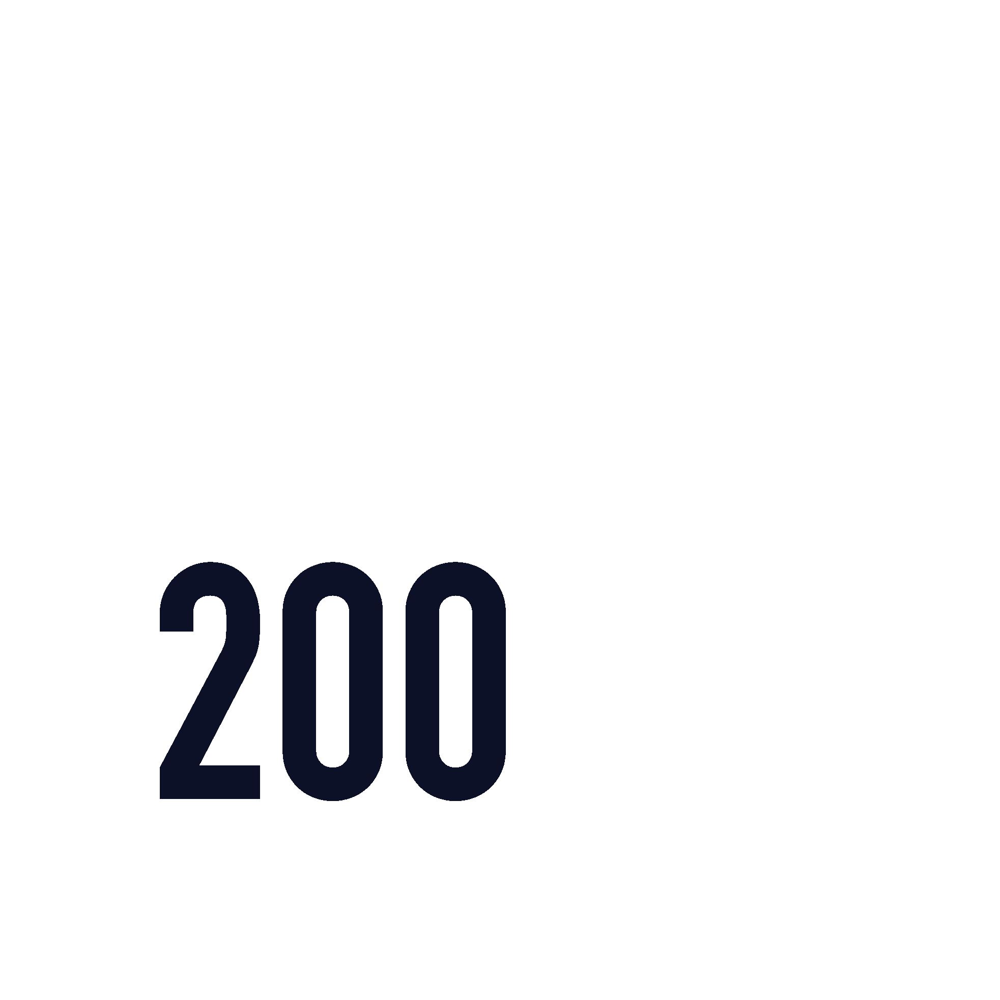
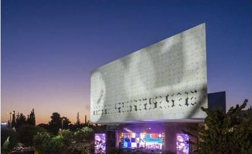

הכול כבר כאן.
עכשיו הוא יכול להיות אישי.
המשתמש בוחר עניין.
הספרייה בונה סביבו מסע.
- תחומי עניין שהוא סימן, לא שאנחנו ניחשנו
- כל שמירה נכנסת למדף אישי
- משתנה בכל רגע, ממסך אחד
- תצלום, פיוט או עמוד עיתון
- פחות מתשעים שניות: לקרוא, להאזין, לשמור
- בשעה ובתדירות שהוא קבע
- הופעות, סיורים, שיחי גלריה
- שמירת מקום בלחיצה, הכרטיס בטלפון
- מקורא תוכן למבקר בפועל
- קוד אישי במקום כרטיס פיזי
- זהות אחת לחיפוש, הזמנה, כניסה והרשמה
- המפתח שמחבר את הכול
- לכל מתחם: אולמות, מרכז מבקרים, כניסות
- התראה כשמשהו משתנה
- בעלים אחד מעדכן, כולם יודעים
- הזמנה, הארכה והשאלות במקום אחד
- התראה כשפריט מבוקש מתפנה
- בלי לבדוק שוב ושוב
- נֶלִי כבר עונה 24/7 באתר
- התשובה חוזרת כפריטים אמיתיים
- כל תשובה מצביעה על המקור
- שם משפחה ועיר מוצא, ומשם פריט
- השירות כבר קיים אצלכם
- מפריט לסיפור משפחתי, ומשם לספרן
זה גם יוצר שכבת מדידה: מה מעניין, מה נפתח, מה מוביל להרשמה, ומה מחזיר משתמשים.
 מתחום העניין שלך
מתחום העניין שלך
כשמשהו שמעניין אותי קורה - הספרייה יודעת לעדכן.
מה מוביל להרשמה, ומי מגיע בפועל.
מוזיקה ישראלית200Apps · מאתיים אפליקציות


גן החיות התנ״כי, ירושלים
מה בנינו
- אתר מלא
- מפה אינטראקטיבית של השטח
- התראות על אירועים
- חדשות ועדכונים
מוסד ירושלמי עם קהל משפחות, מתחם גדול להתמצאות, ולוח אירועים שמשתנה. מפה, שעות והתראות על אירועים - מול קהל אמיתי, באותה עיר.

ירושמיים
אפליקציה ירושלמית פופולרית: מזג האוויר בעיר, שיתוף תמונות מהמשתמשים, והתראות על אירועים ועדכונים. אותו קהל ירושלמי שמגיע אליכם לספרייה.

SparkIL · הסוכנות היהודית
פלטפורמת הלוואות P2P שמחברת תומכים בעולם לעסקים קטנים בישראל. גיוס, מעקב על החזרים, תשלומים, סיפורי לווים וסינון לפי קטגוריות, בעברית ובאנגלית.

Service Link
אפליקציה שמנהלת טכנאי שירות בצפון אמריקה. הטכנאי מקבל מסלול יומי על מפה, עם עצירות ממוספרות, ניווט ביניהן וניהול הקריאה בשטח.

מיזם מיגור המלריה באפריקה
מערכת שמנהלת קמפייני ריסוס בכפרים בגאנה. מפת לוויין מחולקת לאזורי סריקה, כל אזור נמדד באחוזי כיסוי, והדיווח מגיע מהשדה גם ממקומות בלי תשתית תקשורת.

לא צריך להחליט עכשיו על מוצר.
צריך לבחור איפה מתחילים.
נבחר קהל אחד, רגע אחד במסע המבקר ומטרה אחת שחשוב לשפר.
ומשם נהפוך את הכיוון לתרחיש קונקרטי שאפשר לבחון.